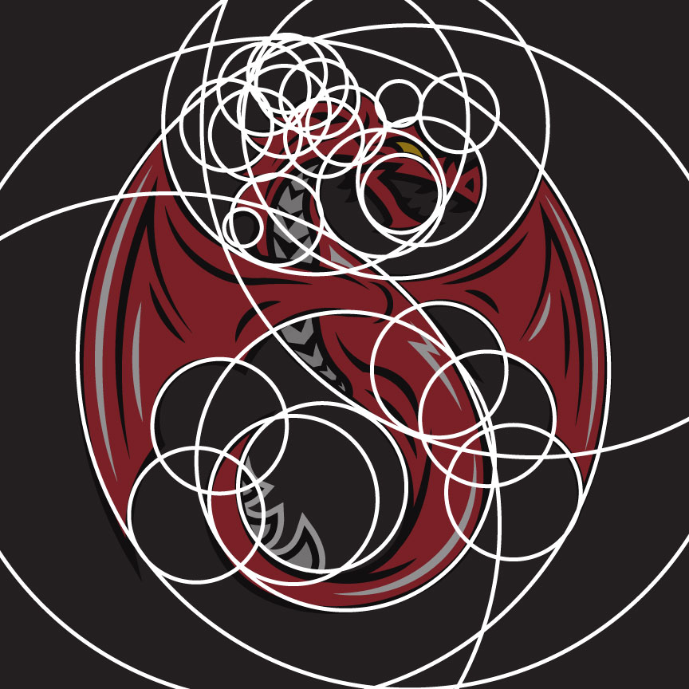

This project was one that I did for personal fun. I am a huge hockey fan and love sport logo and jersey designs. I figured it would be neat if I designed a logo and jersey for a team, but mot having a great idea about where to start, I went back to where I started: my first public school. I began sketching the school's mascot - a dragon, but wanted to make it a bit more modern and suited for a hockey jersey than the initial logo for the school. I changed the colour scheme from the school's green, black and white, to red, grey and white. I finalized a sketch, and produced my first draft of the digital version. I was very happy with it, but then looked at what made great logos so great to find ways to improve it. I used geometry and perfect circles to form the foundation of the revised logo and produced the second verison. I am much happeir with how it turned out and think it would be cool to see it thrown on a hockey jersey to see my idea go from the initial sketch to the final produced jersey.